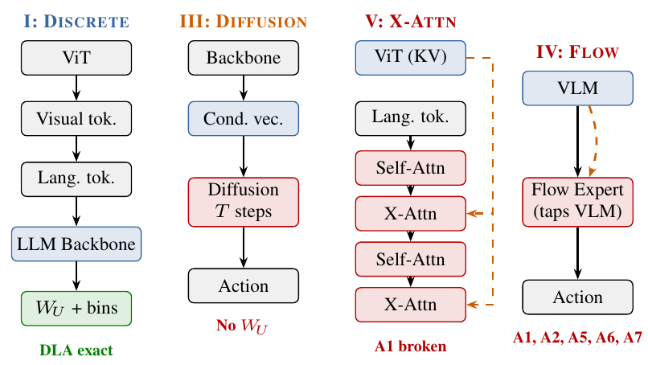
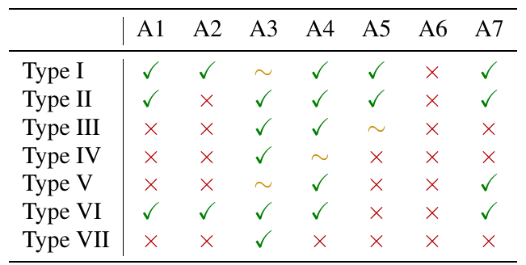

The Hitchhiker’s Guide to Mechanistic Interpretability of Vision-Language-Action Models
论文笔记: The Hitchhiker’s Guide to Mechanistic Interpretability of Vision-Language-Action Models
这篇最值得带走的是一个检查习惯：解释工具能运行，不代表它仍在测量你关心的机器人行为。 作者把 LLM 机制可解释性工具依赖的条件拆成七项，再对照 VLA 的动作输出、模态融合与时间结构，列出容易得到“漂亮但答非所问”的结果的地方。
我认为它适合当实验设计前的检查清单，但不能当成“这些工具在 VLA 上已被系统证明失效”的依据：全文没有新增实验，几处定量口吻的判断也没有测量或推导支持。
读完应记住四件事：
- 先追踪实际动作输出路径，再决定能否用文本 unembedding 做归因。
- 模态、token 位置、动作维度和生成步数，都是解释对象的一部分，不能随意平均。
- 能预测动作、能改变动作、能解释闭环成功，是三种不同强度的证据。
- 文中的修补建议本身也需验证，尤其是 DLA 比例缩放和“均值干预必然在分布内”的说法。
1. 背景信息与材料边界
- 作者与机构：Aryan Goyal；PDF 列出 Independent Researcher 与 Carnegie Mellon University。
- 发表背景：作者项目页列为 ICML 2026 Mechanistic Interpretability Workshop 的 position paper。用户提供的 PDF 未标明版本号或修订日期，不据此认定它是最新版本。
- 阅读材料：用户提供的完整 6 页 PDF，包含正文 §1–7、Figure 1、Table 1 和参考文献，无附录。已逐项核对原图与表格；未运行代码或复现实验。OpenReview 原文入口。图片来源与 PDF 校验值保存在配套资产的
source.json中。
2. 关键问题：一张“夹爪控制头”热图，可能根本没在解释夹爪
**Golden Case，以下为便于理解构造，并非论文的实测案例：**机器人要把红色方块移到右边，然后张开夹爪。我们想找出“什么时候松手”由哪些内部组件决定。
直接搬用 LLM 工具，至少可能走进三条岔路：
- 对一个用 flow matching 输出连续动作的 VLA，把头激活投影到文本词表，找到与 “open” 接近的头。热图解释的是文本读出，而机器人实际执行的动作还要经过另一套 action expert 和积分过程。
- 对激活做 SVD，挑最大方差方向。它可能主要记录机械臂平移或场景变化；夹爪开合即使决定任务成败，也未必占很大方差。
- 把视觉、语言和动作位置混在一起求均值，再做消融。抓取失败可能来自不合适的替换值，而非删除了“松手机制”。
这三种问题分别涉及测错输出、选错统计目标、造错对照条件。论文的价值，是提醒我们先检查解释实验在问什么，而不是看到干预后成功率下降就宣布找到电路。
3. 关键方法：按实际计算路径检查工具前提
3.1 先沿同一个案例走完分析流程
本文没有提出一个可直接训练部署的新算法。下面是依据 §4–6 整理的分析流程，流程中的具体实验安排属于笔记者建议：
- 固定策略，记录真实数据流。 将图像、指令和适用的机器人状态送入 VLA，记录目标位置的头输出、实际动作输出，以及动作生成过程的步索引。分析阶段不更新策略参数。
- 查“张开夹爪”究竟从哪里读出。 若模型输出动作 token，可研究对应动作 token 的 logits；若经过连续动作头，就不能用文本词表中的 “open” 自动替代夹爪动作。
- 选择与目标一致的候选方向。 作者建议连续动作使用监督探针，以激活预测目标动作量。这里新增训练的是 probe；需要有对应的动作标签，且应在独立轨迹上检验预测效果。
- 干预候选组件，分别观察即时与闭环效应。 固定观测看夹爪输出如何改变，再让策略执行整条轨迹，看是否真的在合适时刻松手。读出准确只产生候选机制，后面的干预才检验策略是否使用它。

原文 Figure 1，PDF p.4。重点看绿色的共享词表读出、独立扩散头、橙色视觉跨注意力路径，以及单独权重的 flow expert。它是一张架构示意图，没有报告任何工具准确率。图中 “DLA exact” 也不等于 DLA 已解释了所有间接因果作用。
3.2 DLA 为什么依赖“对的读出”？
Direct Logit Attribution（DLA，直接 logit 归因）的直觉是：残差流由组件输出相加而成，如果目标输出还是线性读出，就能分别计算每一项对目标分数的直接贡献。将原文 Eq. 1–3 简写为：
$o_{l,h}$ 是写入残差流的头输出，$m_l$ 是 MLP 输出，$w_{v^+}-w_{v^-}$ 是两个候选输出的读出方向。$s_{l,h}$ 回答的是该头向选定分数写入了多少，不直接等于移除该头后最终行为会改变多少。 原文使用的是简化加法形式；实际模型还需处理归一化与下游间接影响。
在有跨注意力的模型里，若漏掉 $\sum_l\mathrm{XA}_l$，分解就不完整。在动作经过非线性 MLP、扩散或 flow expert 的模型里，文本 $W_U$ 则未必对应真实执行路径。两者分别是少算了组件和选错了输出函数，修法并不相同。
作者为后一类问题提出：
这把归因方向换成监督学到的动作预测方向（§6 F2）。它回答“哪些组件贡献给这个线性预测器”；只有进一步核对实际动作头和干预结果，才能支持“哪些组件控制夹爪”。论文没有提供探针训练协议或验证结果。
3.3 七项条件应当怎样读？
作者的 A1–A7 可整理为以下问题（§4）：
| 条件 | 实际需要检查的内容 |
|---|---|
| A1 单一残差流 | 是否遗漏跨注意力、独立动作网络或 action expert 的计算？ |
| A2 共享线性读出 | 用来解释的输出矩阵是否真的生成目标动作？ |
| A3 模块同质性 | 视觉编码器、语言骨干与动作头能否使用同一种解释尺度？ |
| A4 决策级目标 | 评估的是某个 token、某个动作维度，还是可有多条解的任务？ |
| A5 架构规整性 | 层／头索引是否明确指向同一个分支或专家？ |
| A6 目标子空间的叠加 | 目标方向能否被当前表示方法识别，最大方差是否与目标有关？ |
| A7 单次前向决策 | 是否还有去噪、ODE 积分或多个未来动作位置需要展开？ |

原文 Table 1，PDF p.5。I–VII 依次为离散 token、连续回归、扩散、flow matching、跨注意力融合、异构专家、时间动作块；✓／×／∼ 表示作者判断的满足／不满足／部分满足。这不是测出的工具失效率。 七类并不互斥，例如 $\pi_0$ 同时落入 IV 与 VI，不能把两个类型的叉数相加当成模型风险分数。
表格也不能取代具体实现分析。正文 A4 讨论了离散动作维度之间的条件依赖，Table 1 却给 Type I 的 A4 标 ✓，未解释判定尺度。PDF 中 Type V 的 A5 为 ×，作者网页对应单元格为 ✓；本笔记保留用户 PDF 原表，差异原因 [?]。
我更愿意把这些条件理解成“某种分析设计可能依赖的前提”。它们并非所有机制解释工具共同需要的定理条件：SAE 本来就在处理叠加特征，activation patching 也不必一律以线性文本读出为评估目标。架构复杂会增加分析负担，不自动证明工具不可用。
3.4 两个实现细节，有用但不能跨配置照抄
§4 p.3 给了两个 OpenVLA 例子：
- **P1，输出集合：**作者写动作 token ID 为 31744–31999，总词表为 32,064。若问题是“在允许的动作中选哪个”，应检查对动作子集归一化；全词表 softmax 与动作条件分布回答的是不同问题，不能只因词表大就断言概率必然接近零。
- **P2，序列位置：**作者例子中有 256 个视觉 patch 与 25 个文本 token，实际 hidden sequence 长度是 281，而
input_ids只显示文本部分。应读取实际注入后的序列及位置映射，不能只按文本长度寻找视觉注意力。
这些是原文列出的配置示例，不是对全部 checkpoint 的验证。特别是 25 个文本 token 随 prompt 改变，动作子集还需与实际 tokenizer 和解码代码核对。
4. 数据与证据：这里没有可填写的主实验排行榜
全文没有新增训练集、测试集、对照实验、成功率主表或随机种子统计。Figure 1 负责说明架构，Table 1 负责表达分类判断。§2 提到的“六个模型、约 394k rollout”属于 Grant et al. 的相关工作，不是本论文实验。
几项容易被误读成实验发现的表述，应保留原来的证据强度：
| 原文说法 | 位置 | 能确认什么，缺什么 |
|---|---|---|
| 消融由文本读出挑出的头后，rollout 基本不变 | §6 F2，p.4 | 作者作出此断言，但未列具体模型、任务、消融规模或成功率 |
| 平移变化范围约为夹爪的 100 倍，夹爪方向落在不足 1% 方差的尾部 | §6 F3，pp.4–5 | 没有数据来源、单位、归一化方式或谱图，不能当成普遍经验常数 |
| 噪声尺度能翻转头的重要性排序 | §6 F5，p.5 | 属于合理的待验证风险，但没有排序相关性、曲线或对照结果 |
| 动作块 $K=8$ 使误差积累减少约一个数量级 | §4，p.3 | 是正文论述，本文没有给出该缩放关系的实验或完整推导 |
因此，本文最强的支撑是计算路径不匹配的结构分析；最弱的是将具体数值、普遍失效和修复保证写得像已被验证。复现时应把后者转成实验假设，而不是在新论文中直接作为已知事实引用。
5. 关键结论与需要保留的反例
5.1 漏算一项，不等于每一项都被乘小
F1 从“跨注意力贡献没有被计入”进一步声称：若它占输出信号比例 $\alpha$，各 DLA 分数都缩小为 $1-\alpha$，因此内部排名不变。Eq. 3 本身不足以推出这条普遍结论。
为便于理解构造一个加法反例：两个已记录头的直接贡献分别是 2 和 1，漏记的跨注意力贡献是 1，总分为 4。遗漏记录不会使原来的点积 2、1 自动变成 1.5、0.75；改变的是总量覆盖与可能使用的归一化分母。若要声称所有分数按同一比例变化，必须先定义“分数”究竟是原始点积还是归一化占比。
更进一步，“消融后其他路径会补偿”涉及下游计算如何响应，不能从静态加法分解直接推出。可靠的结论是需要补齐路径；统一缩放和补偿幅度则要额外验证。
5.2 保留位置的均值更合理，但不保证在分布内
作者建议按位置替换：
从而避免把视觉、语言和动作位置平均到一起（F5）。这个方向是合理的，尤其适合检查混合序列的基线偏差。
但“均值只会替换为模型在该位置见过的值，因此消除两类偏差”过强。**构造反例：**某位置只出现过 $-1$ 和 $+1$，均值 0 就从未出现；在弯曲流形上也可能如此。按位置平均降低了模态混杂，却不能证明干预落在支持集内，更不能消除条件上下文不匹配。
对松手案例，我会比较按模态／动作阶段条件化的均值与匹配样本替换，并检查不同基线下的头排序是否稳定。这是后续实验建议，原文没有做该比较。
5.3 闭环成功重要，但不能单独裁决机制解释
§4 引述行为克隆中离散错误积累的 $J(\pi)-J(\pi^*)\leq\varepsilon H^2$ 形式，并讨论连续控制误差如何受动力学稳定性影响。对本论文最有用的含义是：解释只有被用来持续干预策略，才会通过环境反馈累积行为后果；一张静态归因图本身不会累积控制误差。
作者据此指出，rollout 成功不能独立证明电路解释正确，失败也不能独立否定解释。这个区分值得保留。但动作离散化并不自动使物理系统稳定，动作块也不天然保证按 $K$ 倍减小误差；还取决于重规划频率、每块实际执行长度及闭环动力学。本文没有控制这些因素。
6. Insights：怎样把清单变成可检验的研究？
1. 比“某类架构能否解释”更好的单位，是“模型 × 行为变量 × 生成阶段”。 同一个 VLA 的文本读出可能不适合解释连续夹爪，却仍可用于检查其语言相关表示。论文把问题归到架构类型，方便入门；真正设计实验时，应明确解释哪一个动作维度、哪一个 token／去噪步、在什么条件下。这样分类表的分歧也能变成可核对的实现问题。
2. 只看第一个动作 token，会改变研究问题。 作者建议用第一动作 token 排除先前动作维度的条件依赖（A4）。这对隔离某些视觉到动作路径有帮助，但若夹爪对应后面的动作 token，改看第一个 token 就不再回答“何时松手”。更合适的实验是固定或反事实替换先前动作维度，再测夹爪输出，分别识别视觉信息与维度间协调的贡献。
3. 可以用同一候选组件连接三层证据。 先在独立轨迹上看动作预测，再在相同观测下施加受控扰动，最后评估连续干预的 rollout，同时保留随机／匹配范数对照。若 probe 很准但即时动作不变，首先怀疑相关信息未被策略使用；若即时变化符合预期但长程失败，再检查动力学放大、时机和恢复能力。这比把所有差异都压成一个“解释有效率”更能定位问题。
7. 连接与发现
- MOC-VLA — Topic：为动作表示、动作生成和闭环评估增加解释工具适用性检查。
- MOC-Interpretability — Topic：区分直接读出、可预测性、干预效果和机制忠实性。
- Not-All-Features-Are-Created-Equal-VLA机制与因果干预 — 本文引用的跨模型实证研究；可对照逐 token 分析与 hook 范围如何影响闭环结论。
- Mechanistic-Finetuning-of-Vision-Language-Action-Models-via-Few-Shot-Demonstrations-动作回归选头 — 同样把动作相关性用于筛选头，但使用跨轨迹 k-NN 回归选择更新位置，目标是适配收益；不能与本文建议的线性 ProbeDLA 混为同一算法或同一证据。